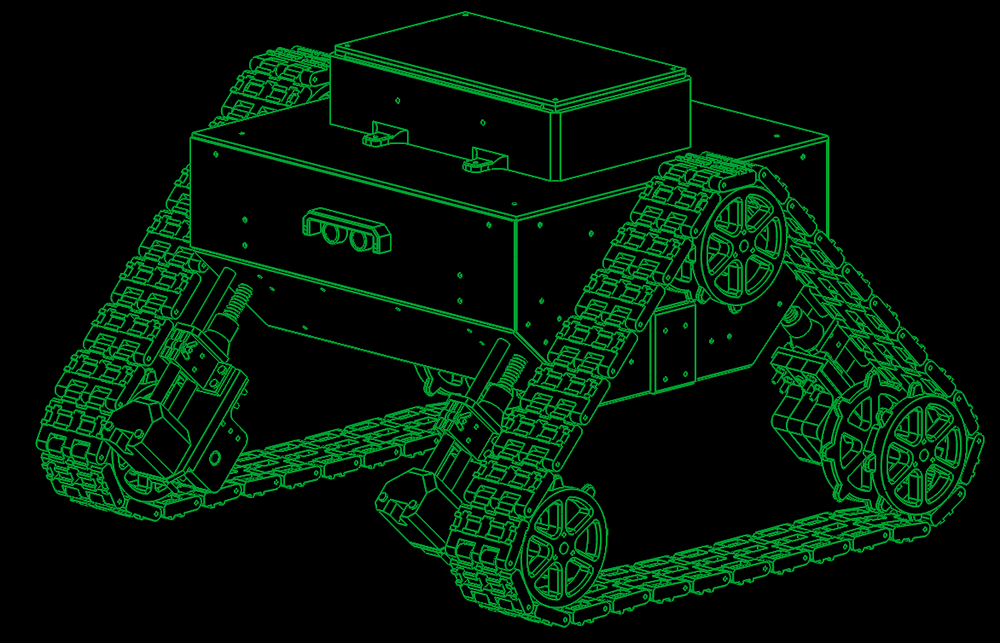

According to all known laws of aviation, there is no way a bee should be able to fly.
Its wings are too small to get its fat little body off the ground.
The bee, of course, flies anyway because bees don't care what humans think is impossible.
Yellow, black. Yellow, black. Yellow, black. Yellow, black.
Ooh, black and yellow!
Let's shake it up a little.
Barry! Breakfast is ready!
Coming!
Hang on a second.
Hello?
Barry?
Adam?
Can you believe this is happening?
I can't.
I'll pick you up.
Looking sharp.
Use the stairs, Your father paid good money for those.
Sorry. I'm excited.
Here's the graduate.
We're very proud of you, son.
A perfect report card, all B's.
Very proud.
Ma! I got a thing going here.
You got lint on your fuzz.
Ow! That's me!
Wave to us! We'll be in row 118,000.
Bye!
Barry, I told you, stop flying in the house!
Hey, Adam.
Hey, Barry.
Is that fuzz gel?
A little. Special day, graduation.
Never thought I'd make it.
Three days grade school, three days high school.
Those were awkward.
Three days college. I'm glad I took a day and hitchhiked around The Hive.
You did come back different.
Hi, Barry. Artie, growing a mustache? Looks good.
Hear about Frankie?
Yeah.
You going to the funeral?
No, I'm not going.
Everybody knows, sting someone, you die.
Don't waste it on a squirrel.
Such a hothead.
I guess he could have just gotten out of the way.
I love this incorporating an amusement park into our day.
That's why we don't need vacations.
Boy, quite a bit of pomp under the circumstances.
Well, Adam, today we are men.
We are!
Bee-men.
Amen!
Hallelujah!
Students, faculty, distinguished bees,
please welcome Dean Buzzwell.
Welcome, New Hive City graduating class of 9:15.
That concludes our ceremonies And begins your career at Honex Industries!
Will we pick our job today?
I heard it's just orientation.
Heads up! Here we go.
Keep your hands and antennas inside the tram at all times.
Wonder what it'll be like?
A little scary.
Welcome to Honex, a division of Honesco and a part of the Hexagon Group.
This is it!
Wow.
Wow.
We know that you, as a bee, have worked your whole life to get to the point where you can work for your whole life.
Honey begins when our valiant Pollen Jocks bring the nectar to The Hive.
Our top-secret formula is automatically color-corrected, scent-adjusted and bubble-contoured into this soothing sweet syrup with its distinctive golden glow you know as... Honey!
That girl was hot.
She's my cousin!
She is?
Yes, we're all cousins.
Right. You're right.
At Honex, we constantly strive to improve every aspect of bee existence.
These bees are stress-testing a new helmet technology.
What do you think he makes?
Not enough.
Here we have our latest advancement, the Krelman.
What does that do?
Catches that little strand of honey that hangs after you pour it.
Saves us millions.
Can anyone work on the Krelman?
Of course. Most bee jobs are small ones.
But bees know that every small job, if it's done well, means a lot.
But choose carefully because you'll stay in the job you pick for the rest of your life.
The same job the rest of your life? I didn't know that.
What's the difference?
You'll be happy to know that bees, as a species, haven't had one day off in 27 million years.
So you'll just work us to death?
We'll sure try.
Wow! That blew my mind!
"What's the difference?"
How can you say that?
One job forever?
That's an insane choice to have to make.
I'm relieved. Now we only have to make one decision in life.
But, Adam, how could they never have told us that?
Why would you question anything? We're bees.
We're the most perfectly functioning society on Earth.
You ever think maybe things work a little too well here?
Like what? Give me one example.
I don't know. But you know what I'm talking about.
Please clear the gate. Royal Nectar Force on approach.
Wait a second. Check it out.
Hey, those are Pollen Jocks!
Wow.
I've never seen them this close.
They know what it's like outside The Hive.
Yeah, but some don't come back.
Hey, Jocks!
Hi, Jocks!
You guys did great!
You're monsters!
You're sky freaks! I love it! I love it!
I wonder where they were.
I don't know.
Their day's not planned.
Outside The Hive, flying who knows where, doing who knows what.
You can't just decide to be a Pollen Jock. You have to be bred for that.
Right.
Look. That's more pollen than you and I will see in a lifetime.
It's just a status symbol.
Bees make too much of it.
Perhaps. Unless you're wearing it and the ladies see you wearing it.
Those ladies?
Aren't they our cousins too?
Distant. Distant.
Look at these two.
Couple of Hive Harrys.
Let's have fun with them.
It must be dangerous being a Pollen Jock.
Yeah. Once a bear pinned me against a mushroom!
He had a paw on my throat, and with the other, he was slapping me!
Oh, my!
I never thought I'd knock him out.
What were you doing during this?
Trying to alert the authorities.
I can autograph that.
A little gusty out there today, wasn't it, comrades?
Yeah. Gusty.
We're hitting a sunflower patch six miles from here tomorrow.
Six miles, huh?
Barry!
A puddle jump for us, but maybe you're not up for it.
Maybe I am.
You are not!
We're going 0900 at J-Gate.
What do you think, buzzy-boy?
Are you bee enough?
I might be. It all depends on what 0900 means.
Hey, Honex!
Dad, you surprised me.
You decide what you're interested in?
Well, there's a lot of choices.
But you only get one.
Do you ever get bored doing the same job every day?
Son, let me tell you about stirring.
You grab that stick, and you just move it around, and you stir it around.
You get yourself into a rhythm.
It's a beautiful thing.
You know, Dad, the more I think about it,
maybe the honey field just isn't right for me.
You were thinking of what, making balloon animals?
That's a bad job for a guy with a stinger.
Janet, your son's not sure he wants to go into honey!
Barry, you are so funny sometimes.
I'm not trying to be funny.
You're not funny! You're going into honey. Our son, the stirrer!
You're gonna be a stirrer?
No one's listening to me!
Wait till you see the sticks I have.
I could say anything right now.
I'm gonna get an ant tattoo!
Let's open some honey and celebrate!
Maybe I'll pierce my thorax. Shave my antennae. Shack up with a grasshopper. Get a gold tooth and call everybody "dawg"!
I'm so proud.
We're starting work today!
Today's the day.
Come on! All the good jobs will be gone.
Yeah, right.
Pollen counting, stunt bee, pouring, stirrer, front desk, hair removal...
Is it still available?
Hang on. Two left!
One of them's yours! Congratulations!
Step to the side.
What'd you get?
Picking crud out. Stellar!
Wow!
Couple of newbies?
Yes, sir! Our first day! We are ready!
Make your choice.
You want to go first?
No, you go.
Oh, my. What's available?
Restroom attendant's open, not for the reason you think.
Any chance of getting the Krelman?
Sure, you're on.
I'm sorry, the Krelman just closed out.
Wax monkey's always open.
The Krelman opened up again.
What happened?
A bee died. Makes an opening. See? He's dead. Another dead one.
Deady. Deadified. Two more dead.
Dead from the neck up. Dead from the neck down. That's life!
Oh, this is so hard!
Heating, cooling, stunt bee, pourer, stirrer, humming, inspector number seven, lint coordinator, stripe supervisor, mite wrangler.
Barry, what do you think I should... Barry?
Barry!
All right, we've got the sunflower patch in quadrant nine...
What happened to you?
Where are you?
I'm going out.
Out? Out where?
Out there.
Oh, no!
I have to, before I go to work for the rest of my life.
You're gonna die! You're crazy! Hello?
Another call coming in.
If anyone's feeling brave, there's a Korean deli on 83rd that gets their roses today.
Hey, guys.
Look at that.
Isn't that the kid we saw yesterday?
Hold it, son, flight deck's restricted.
It's OK, Lou. We're gonna take him up.
Really? Feeling lucky, are you?
Sign here, here. Just initial that.
Thank you.
OK.
You got a rain advisory today, and as you all know, bees cannot fly in rain.
So be careful. As always, watch your brooms, hockey sticks, dogs, birds, bears and bats.
Also, I got a couple of reports of root beer being poured on us.
Murphy's in a home because of it, babbling like a cicada!
That's awful.
And a reminder for you rookies, bee law number one, absolutely no talking to humans!
All right, launch positions!
Buzz, buzz, buzz, buzz! Buzz, buzz, buzz, buzz! Buzz, buzz, buzz, buzz!
Black and yellow!
Hello!
You ready for this, hot shot?
Yeah. Yeah, bring it on.
Wind, check.
Antennae, check.
Nectar pack, check.
Wings, check.
Stinger, check.
Scared out of my shorts, check.
OK, ladies,
let's move it out!
Pound those petunias, you striped stem-suckers!
All of you, drain those flowers!
Wow! I'm out!
I can't believe I'm out!
So blue.
I feel so fast and free!
Box kite!
Wow!
Flowers!
This is Blue Leader, We have roses visual.
Bring it around 30 degrees and hold.
Roses!
30 degrees, roger. Bringing it around.
Stand to the side, kid.
It's got a bit of a kick.
That is one nectar collector!
Ever see pollination up close?
No, sir.
I pick up some pollen here, sprinkle it over here. Maybe a dash over there, a pinch on that one.
See that? It's a little bit of magic.
That's amazing. Why do we do that?
That's pollen power. More pollen, more flowers, more nectar, more honey for us.
Cool.
I'm picking up a lot of bright yellow, Could be daisies, Don't we need those?
Copy that visual.
Wait. One of these flowers seems to be on the move.
Say again? You're reporting a moving flower?
Affirmative.
That was on the line!
This is the coolest. What is it?
I don't know, but I'm loving this color.
It smells good.
Not like a flower, but I like it.
Yeah, fuzzy.
Chemical-y.
Careful, guys. It's a little grabby.
My sweet lord of bees!
Candy-brain, get off there!
Problem!
Guys!
This could be bad.
Affirmative.
Very close.
Gonna hurt.
Mama's little boy.
You are way out of position, rookie!
Coming in at you like a missile!
Help me!
I don't think these are flowers.
Should we tell him?
I think he knows.
What is this?!
Match point!
You can start packing up, honey, because you're about to eat it!
Yowser!
Gross.
There's a bee in the car!
Do something!
I'm driving!
Hi, bee.
He's back here!
He's going to sting me!
Nobody move. If you don't move, he won't sting you. Freeze!
He blinked!
Spray him, Granny!
What are you doing?!
Wow... the tension level out here is unbelievable.
I gotta get home.
Can't fly in rain. Can't fly in rain. Can't fly in rain.
Mayday! Mayday! Bee going down!
Ken, could you close the window please?
Ken, could you close the window please?
Check out my new resume. I made it into a fold-out brochure. You see? Folds out.
Oh, no. More humans. I don't need this.
What was that?
Maybe this time. This time. This time. This time! This time! This... Drapes!
That is diabolical.
It's fantastic. It's got all my special skills, even my top-ten favorite movies.
What's number one? Star Wars?
Nah, I don't go for that... kind of stuff.
No wonder we shouldn't talk to them. They're out of their minds.
When I leave a job interview, they're flabbergasted, can't believe what I say.
There's the sun. Maybe that's a way out.
I don't remember the sun having a big 75 on it.
I predicted global warming. I could feel it getting hotter. At first I thought it was just me.
Wait! Stop! Bee!
Stand back. These are winter boots.
Wait!
Don't kill him!
You know I'm allergic to them! This thing could kill me!
Why does his life have less value than yours?
Why does his life have any less value than mine? Is that your statement?
I'm just saying all life has value. You don't know what he's capable of feeling.
My brochure!
There you go, little guy.
I'm not scared of him.It's an allergic thing.
Put that on your resume brochure.
My whole face could puff up.
Make it one of your special skills.
Knocking someone out is also a special skill.
Right. Bye, Vanessa. Thanks.
Vanessa, next week? Yogurt night?
Sure, Ken. You know, whatever.
You could put carob chips on there.
Bye.
Supposed to be less calories.
Bye.
I gotta say something. She saved my life. I gotta say something.
All right, here it goes.
Nah.
What would I say?
I could really get in trouble. It's a bee law. You're not supposed to talk to a human.
I can't believe I'm doing this. I've got to.
Oh, I can't do it. Come on!
No. Yes. No. Do it. I can't.
How should I start it? "You like jazz?" No, that's no good.
Here she comes! Speak, you fool!
Hi!
I'm sorry. You're talking.
Yes, I know.
You're talking!
I'm so sorry.
No, it's OK. It's fine.
I know I'm dreaming. But I don't recall going to bed.
Well, I'm sure this is very disconcerting.
This is a bit of a surprise to me. I mean, you're a bee!
I am. And I'm not supposed to be doing this, but they were all trying to kill me.
And if it wasn't for you... I had to thank you. It's just how I was raised.
That was a little weird. I'm talking with a bee.
Yeah.
I'm talking to a bee. And the bee is talking to me!
I just want to say I'm grateful.
I'll leave now.
Wait! How did you learn to do that?
What?
The talking thing.
Same way you did, I guess. "Mama, Dada, honey." You pick it up.
That's very funny.
Yeah.
Bees are funny. If we didn't laugh, we'd cry with what we have to deal with.
Anyway... Can I... get you something?
Like what?
I don't know. I mean... I don't know. Coffee?
I don't want to put you out.
It's no trouble. It takes two minutes.
It's just coffee.
I hate to impose.
Don't be ridiculous!
Actually, I would love a cup.
Hey, you want rum cake?
I shouldn't.
Have some.
No, I can't.
Come on!
I'm trying to lose a couple micrograms.
Where?
These stripes don't help.
You look great!
I don't know if you know anything about fashion.
Are you all right?
No.
He's making the tie in the cab as they're flying up Madison.
He finally gets there.
He runs up the steps into the church.
The wedding is on.
And he says, "Watermelon?
I thought you said Guatemalan.
Why would I marry a watermelon?"
Is that a bee joke?
That's the kind of stuff we do.
Yeah, different.
So, what are you gonna do, Barry?
About work? I don't know.
I want to do my part for The Hive, but I can't do it the way they want.
I know how you feel.
You do?
Sure.
My parents wanted me to be a lawyer or a doctor, but I wanted to be a florist.
Really?
My only interest is flowers.
Our new queen was just elected with that same campaign slogan.
Anyway, if you look... There's my hive right there. See it?
You're in Sheep Meadow!
Yes! I'm right off the Turtle Pond!
No way! I know that area. I lost a toe ring there once.
Why do girls put rings on their toes?
Why not?
It's like putting a hat on your knee.
Maybe I'll try that.
You all right, ma'am?
Oh, yeah. Fine.
Just having two cups of coffee!
Anyway, this has been great.
Thanks for the coffee.
Yeah, it's no trouble.
Sorry I couldn't finish it. If I did, I'd be up the rest of my life.
Are you...?
Can I take a piece of this with me?
Sure! Here, have a crumb.
Thanks!
Yeah.
All right. Well, then... I guess I'll see you around. Or not.
OK, Barry.
And thank you so much again... for before.
Oh, that? That was nothing.
Well, not nothing, but... Anyway...
This can't possibly work.
He's all set to go.
We may as well try it.
OK, Dave, pull the chute.
Sounds amazing.
It was amazing!
It was the scariest, happiest moment of my life.
Humans! I can't believe you were with humans!
Giant, scary humans!
What were they like?
Huge and crazy. They talk crazy.
They eat crazy giant things.
They drive crazy.
Do they try and kill you, like on TV?
Some of them. But some of them don't.
How'd you get back?
Poodle.
You did it, and I'm glad. You saw whatever you wanted to see.
You had your "experience." Now you can pick out yourjob and be normal.
Well...
Well?
Well, I met someone.
You did? Was she Bee-ish?
A wasp?! Your parents will kill you!
No, no, no, not a wasp.
Spider?
I'm not attracted to spiders.
I know it's the hottest thing, with the eight legs and all. I can't get by that face.
So who is she?
She's... human.
No, no. That's a bee law. You wouldn't break a bee law.
Her name's Vanessa.
Oh, boy.
She's so nice. And she's a florist!
Oh, no! You're dating a human florist!
We're not dating.
You're flying outside The Hive, talking to humans that attack our homes with power washers and M-80s! One-eighth a stick of dynamite!
She saved my life! And she understands me.
This is over!
Eat this.
This is not over! What was that?
They call it a crumb.
It was so stingin' stripey!
And that's not what they eat.
That's what falls off what they eat!
You know what a Cinnabon is?
No.
It's bread and cinnamon and frosting. They heat it up...
Sit down!
...really hot!
Listen to me!
We are not them! We're us.
There's us and there's them!
Yes, but who can deny the heart that is yearning?
There's no yearning. Stop yearning. Listen to me!
You have got to start thinking bee, my friend. Thinking bee!
Thinking bee.
Thinking bee.
Thinking bee! Thinking bee! Thinking bee! Thinking bee!
There he is. He's in the pool.
You know what your problem is, Barry?
I gotta start thinking bee?
How much longer will this go on?
It's been three days! Why aren't you working?
I've got a lot of big life decisions to think about.
What life? You have no life!
You have no job. You're barely a bee!
Would it kill you to make a little honey?
Barry, come out. Your father's talking to you.
Martin, would you talk to him?
Barry, I'm talking to you!
You coming?
C:\Portfolio\The_Robot_project.txt
Design and construction of a RC tracked vehicle, partially autonomous
BASIC OVERVIEW
The project consisted of three main sub-projects:
- Mechanical design - the CAD project in SolidWorks and calculations;
- Electrical design - circuit design, PCB design and electrical calculations;
- Software design - developed an algorithm for radio-control and autonomous drive;
- Manufacturing - 3D printed and cut the PMMA plates (zap zap laser), etc.;
- Field tests - went outside to touch grass with it.
After all that a remotely controlled tracked vehicle made using 3D printing technology (Janusz V3) came to be. It features:
- A continuous track drive system with suspension springs, driven by two DC motors with worm gear drives;
- Radio control system using the FS-iA6b transceiver and remote;
- Autonomous system, using two ultrasound sensors and a RPi3 for data acquisition (makes maps);
- Transparent housing that allows the user to see the inner workings.
INTRO
Ever since I was a child, I was fascinated with radio-controlled vehicles and tracked vehicles. Somehow the technology to send signals from a remote to a machine, that moves according to my will was magical. The highest of the techs.
When I was in middle school, I got into Arduino with my friend Wrzosik. We made quite a team. I knew nothing about programming and electronics at the time, but I had The Vision, and Wrzosik had the expertise to make it happen.
We made our first RC vehicle, based on Arduino, radio module, brushed DC motors and some cardboard. We called it Janusz V1. Unfortunately, no photographic record survived. Later in high school we made a Janusz V2.
The V2 was a great success (I took it to my high school and convinced my physics teacher to pass me).
Years later, when it came to choosing topic for my engineering thesis, I have chosen to resurrect the Janusz project and make the V3, as I had The Vision and The Expertise now.
MECHANICAL DESIGN
The mechanical design started with an idea of a rough shape that the robot should take. I considered unusual designs, like the ones of tanks from WW1. Drafted first design in CAD inspired by the Mark III British tank.
It looked unusual (as I wanted it) but seemed that it would not be practical in my application. I needed something that could “turn in place” easily. I figured that probably the best way to do it was to make it so the top view of my tank is roughly square… and the Mark III was more of a long rectangle.
I found inspiration in my father's old drawings of tanks, and WALEE (tbh I don't know what was the first thing that came to my mind), but this was the design I went with.
I simplified the track to a chain and the drive wheels to octagons. I have chosen to set the sides of the octagons to 40mm and this represented the distance between the axels in the real links. This allowed me to easily represent the dimensions for later design.
So, the drive wheels where also based on this octagon simplification. The outside octagon represents the track link – the side is 40 mm. The inside octagon is representing the bottom of the link [the sides are track_link_height / 2 away from the outside octagon].
The track links where pretty straight forward. The mounting axels where made 40 mm apart. The holes inside the tracks where put in the center of the track. Two of them gripped the wheel and the center one was for material reduction.
NOTE: The third hole did not reduce the weight, bcs a 3d-printed part filling is less dense than extra four walls that I created making this hole ):<
So assembling the whole drive system it looks somewhat like this:
After designing that I started to work on the suspension system, which would also have to tension the track. The track needs to be constantly tensioned so it won’t slip on the drive wheels. I came up with a design that should take of these two challenges at once.
The holding system for the wheels is connected to the housing by two linear bearings, that allow it to slide up and down. Under the bearing housing I installed a spring that creates tension if the holder tries to move upward, therefore creating a constant tension on the track. It also amortizes the vehicle.
Two of these holders were installed on each side of the vehicle. The top wheel was secured with a bearing.
In the lower part of this part is bearing housing for the wheel axis. I made calculation of how heavy my tank can be, based on the maximum bearing load. When it came to the rolling bearings – 1117 kg (unobtainable amount of mass XD), and the linear bearings – 452 kg (also a lil bit bigger that I think I can manage with 3d-printers).
The shaft is secured with a ring with a screw tightener and two bigger, slimmer rings inside the bearing housing.
Now that I finished the suspension system, I started to work on the clutch connecting the motors to the tracks. Because I needed to do it cheaply, I bought DC motors from WOLTZWAGEN. The motors were used to drive the windows up and down, so they already had the worm gear installed. Unfortunately, the motor axis had an unusual connector which made it hard to couple with the main drive shaft.
1-Motor housing;
2-coils;
3-commutator;
4-worm gear;
5-motor shaft.
Shafts are 8mm (tracks) and 16mm (motor) in diameter. With these dimensions buying an existing clutch would be too expensive for me at the time. I designed a permanently engaged clutch that connected to the shafts via friction. On each side the clutch has two jaws that squeeze on the shaft. Jaws are tensioned by a pair of M3 screws. The two sets of jaws also connect via M3s.
NOTE: In testing the robot, I found out that was the worst part of my design, as the clutches tended to be unreliable in the long run. I had to glue them to the shafts so they don’t disengage randomly. I recommend just using a keyway connection or just buying the commercially available clutches.
Last part of the CAD design was to make a housing for that big boi. To be honest here I was just designing it as simple as I could. I didn’t want to spend a lot of money on the materials so I just designed a PMMA box that fitted my requirements.
 |
|
|
\/

AND NOW...
Aerodynamics of a robot:
ELECTRICAL DESIGN & SOFTWARE
In this part of the project firstly I had to select components for my vehicle. It felt like a putting together a puzzle. ESP32 would be nice, but it was 3.3V and all the other components where 5V. I could have used a voltage level shifter but thought of it as unnecessarily complicated at the time (I was wrong). At the end I used Arduino Nano as a main controller of the vehicle, and Raspberry Pi as a HMI system.
This is a list of the electrical components:
- Arduino Nano
Controlling the motor driver, reading PWM from radio receiver and impulse signals from ultrasonic sensors, I2C communication with magnetometer
- Raspberry Pi 3 B+ & LCD screen
Drawing the map for the autonomous drive, sharing the map files (via a file server, on its WiFi network), showing the files on LCD
- FS-iA6B
Radio signal receiver, sends signals via PWM channels
- IBT-2
DC motors driver, drives motors (duh)
- HC-SR04
Ultrasonic distance sensor for wall detection
- DC motors
DC motors from an old Volkswagen Passat (window control)
- QMC5883L
Magnetometer (digital compass)
- XY-3606
Voltage stabilizer (5V)
- LiPo 11.1V
LiPo battery (1.2Ah) with an undercharge alarm
- PCB
A PCB I made to connect all the components together
- Other small parts
Resistors, diodes ...
Firstly I started working on a PCB schematic to simplify the spaghetti of tangled wires I created while prototyping. I never did this before so I had to learn the EDA software. I have chosen KiCAD because it was free and its UI looked understandable to me.
This is the schematic I came up with for the PCB:
It has two 15-pin headers so I can access any pin from the Arduino Nano, that’s in the center. On the lower left side you can see plugs for the motor driver control and a LED to indicate that the system is turned ON. On the right there are plugs for the power_in, sensor_in, i2c and radio connection.
So I made a PCB based on it:
Trust me, that Rei is essential to the workings of the board.
Afterwards I made the circuit depicting the whole electrical system of the vehicle. On the top of the schematic there is a LiPo battery with a alarm system, switch and a voltage stabilizer module (to 5V). Raw voltage from the battery is fed directly to the motors via the drivers, and the rest is powered by that 5V. On the bottom there is a PCB with all the sensors and radio.